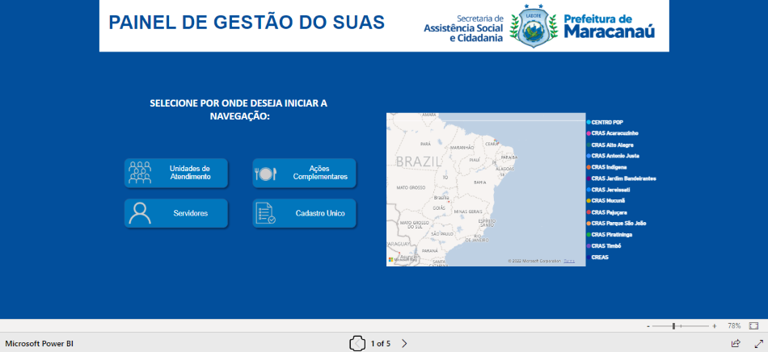

ALGUNS DE MEUS PROJETOS
Pequeno projeto com dados de vendas de uma empresa fictícia num período de 3 anos, com foco no faturamento.
Projeto usando base de dados de empresa fictícia com filiais em três estados: Bahia, Rio de Janeiro e São Paulo.
A ideia principal é segmentar os dados por região e por vendedores.
Projeto criado utilizando a base de dados do PIB dos municípios brasileiros entre os anos de 2010 e 2018.
O foco do projeto é criar um painel com diferentes páginas para visualização de informações gerais sobre o PIB na primeira página, e informações mais detalhadas do PIB percapita na segunda página.
O projeto também possibilita o usuário alternar entre tema claro e tema escuro.
Dados retirados de: https://www.ibge.gov.br/
Projeto real, idealizado e em desenvolvimento em Power BI para a Secretaria de Assistência Social e Cidadania (SASC) da Prefeitura Municipal de Maracanaú.
A ferramenta utiliza banco com dados sensíveis. Portanto, esta é apenas a imagem da página inicial.
